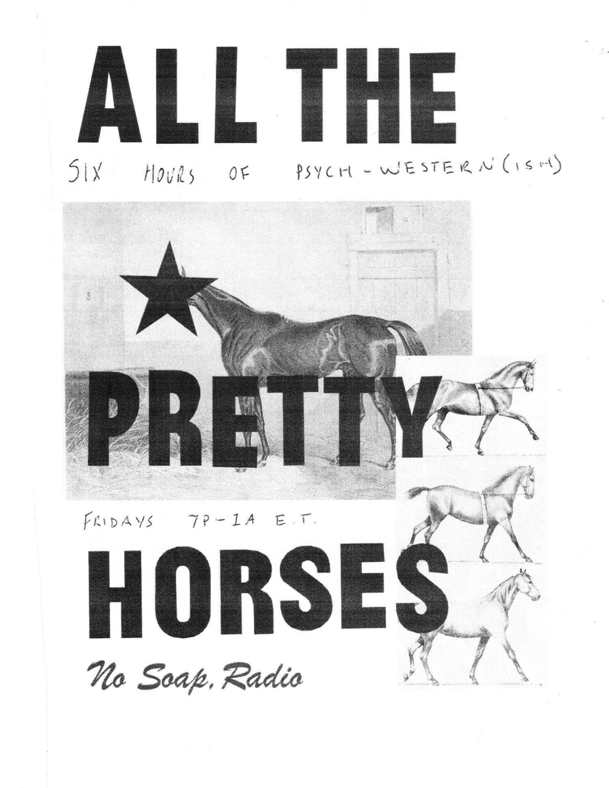

CURRENTLY BROADCASTING ON: A.M. 1660 kHz
IN or AROUND: SURFSIDE BEACH, SC, U.S.A.
studio (at) no-soap.net
"HERE, THERE, AND EVERYWHERE"
Reports
NO SOAP, RADIO is the broadcasting division of GOOD BOY PROJECTS
 "ALL THE PRETTY HORSES"
Starts 02-06-2026
YEAR OF THE HORSE
Six-ish hours of ethereal, spooky, & liminal Americana and Western courtesy of @bspdch.
Inspired by the fog, Louis L'Amour, Cormac McCarthy, and a summer drive along the Missouri River
Airing Fridays from 7 P.M. until 2 A.M. from now on
 "GOOSE/GEESE POWER HOUR"
"GOOSE/GEESE POWER HOUR"Tuesdays at 10 a.m.
Beginning 12-30-2025
During Fall 2025, we at No Soap, Radio HQ have been listening to and enjoying the new album “Getting
Killed” by the indie rock band known as “Geese.”
Unfortunately, were recently informed that the aforementioned “Geese” is in fact entirely distinct,
totally separate, and completely unrelated to the jam band “Goose”, best known for their live
records and for performing at the 2023 Newport Jazz Festival.
We regret this misunderstanding.
As recompense, we have scheduled the GOOSE/GEESE POWER HOUR, a block of programming featuring music
from both the bands “Goose” and “Geese”. You can listen online at NO-SOAP.NET and over the air at
1660 kHz A.M. (within range of our transmitter) every Tuesday at 10 A.M. for the foreseeable future.
Thanks,
No Soap, Radio
Then, farther on, my wandering gaze
made out another crest, blood-red,
marked by a goose more white than butter.
-Dante’s Inferno, Canto XVII 61-63
ALL TIMES EST
LOADING...
"Standard Rotation" unless otherwise noted

PLEASE SUBMIT TEST RESULTS TO
STUDIO (AT) NO-SOAP.NET FOR VERIFICATION